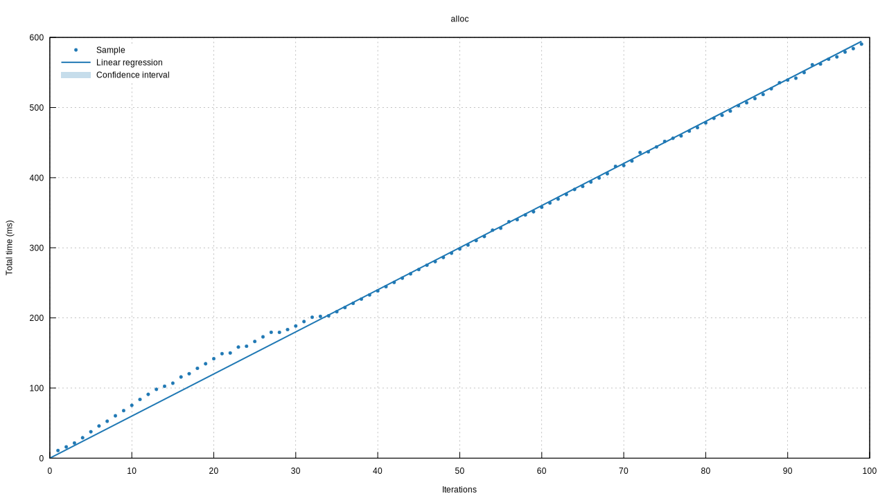

Plots & Graphs
If gnuplot is installed, Criterion.rs can generate a number of useful charts and graphs which you can check to get a better understanding of the behavior of the benchmark.
File Structure
The plots and saved data are stored under target/criterion/$BENCHMARK_NAME/. Here's an example of
the folder structure:
$BENCHMARK/
├── base/
│ ├── raw.csv
│ ├── estimates.json
│ ├── sample.json
│ └── tukey.json
├── change/
│ └── estimates.json
├── new/
│ ├── raw.csv
│ ├── estimates.json
│ ├── sample.json
│ └── tukey.json
└── report/
├── both/
│ ├── pdf.svg
│ └── regression.svg
├── change/
│ ├── mean.svg
│ ├── median.svg
│ └── t-test.svg
├── index.html
├── MAD.svg
├── mean.svg
├── median.svg
├── pdf.svg
├── pdf_small.svg
├── regression.svg
├── regression_small.svg
├── relative_pdf_small.svg
├── relative_regression_small.svg
├── SD.svg
└── slope.svg
The new folder contains the statistics for the last benchmarking run, while the base folder
contains those for the last run on the base baseline (see Command-Line
Options for more information on baselines). The plots are in
the report folder. Criterion.rs only keeps historical data for the last run. The report/both
folder contains plots which show both runs on one plot, while the report/change folder contains
plots showing the differences between the last two runs. This example shows the plots produced by
the default bench_function benchmark method. Other methods may produce additional charts, which
will be detailed in their respective pages.
MAD/Mean/Median/SD/Slope

These are the simplest of the plots generated by Criterion.rs. They display the bootstrapped distributions and confidence intervals for the given statistics.
Regression

The regression plot shows each data point plotted on an X-Y plane showing the number of iterations vs the time taken. It also shows the line representing Criterion.rs' best guess at the time per iteration. A good benchmark will show the data points all closely following the line. If the data points are scattered widely, this indicates that there is a lot of noise in the data and that the benchmark may not be reliable. If the data points follow a consistent trend but don't match the line (eg. if they follow a curved pattern or show several discrete line segments) this indicates that the benchmark is doing different amounts of work depending on the number of iterations, which prevents Criterion.rs from generating accurate statistics and means that the benchmark may need to be reworked.
The combined regression plot in the report/both folder shows only the regression lines and is a
useful visual indicator of the difference in performance between the two runs.

The PDF chart shows the probability distribution function for the samples. It also shows the ranges used to classify samples as outliers. In this example (as in the regression example above) we can see that the performance trend changes noticeably below ~35 iterations, which we may wish to investigate.